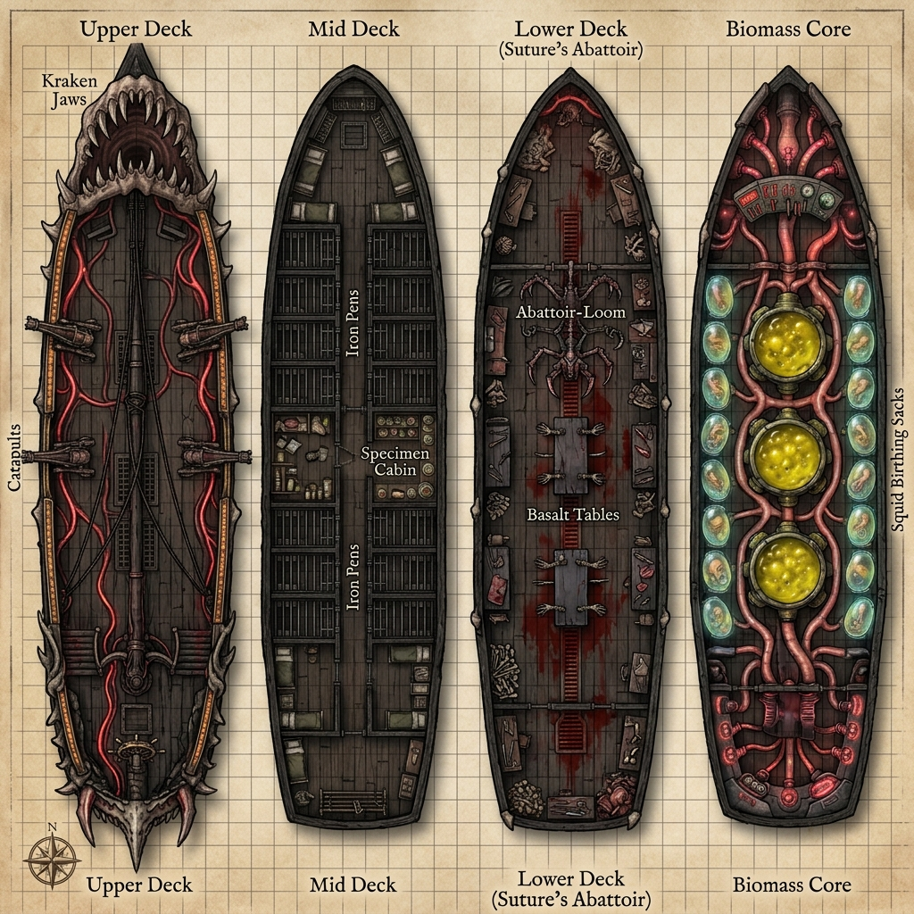
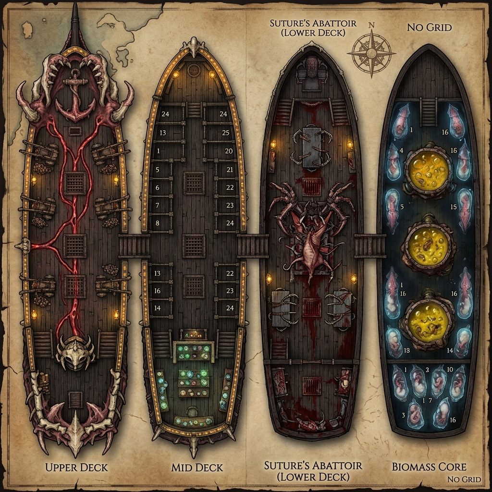
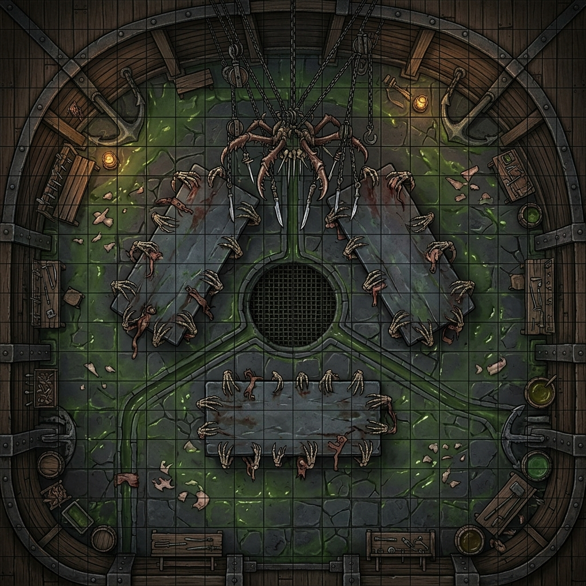
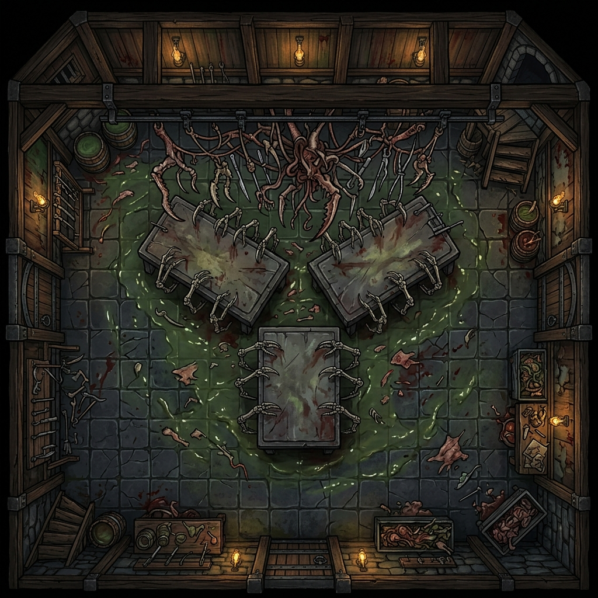
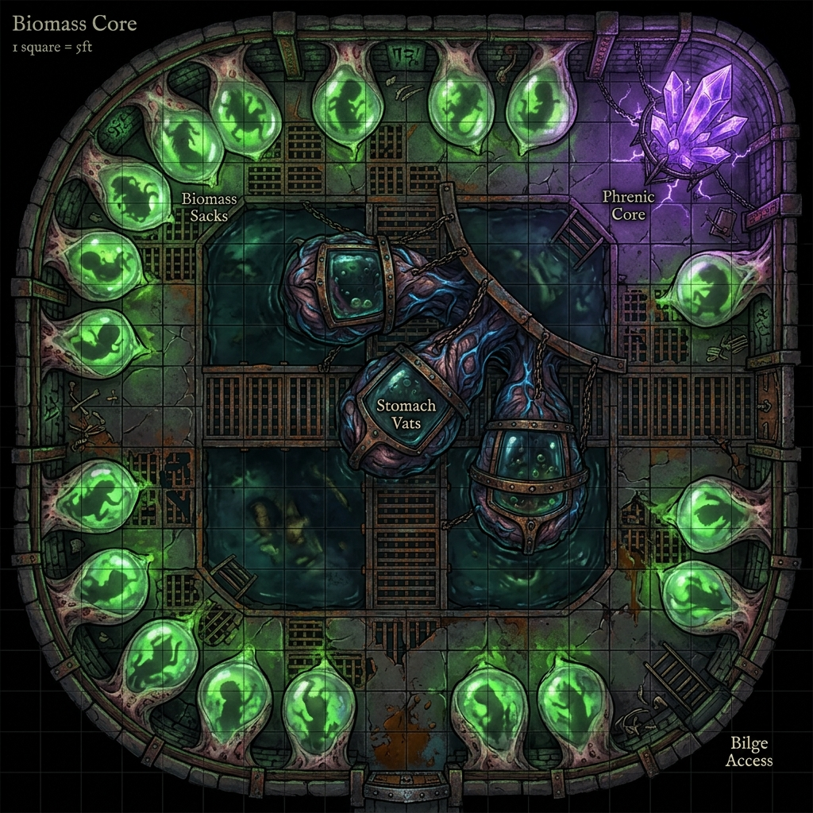
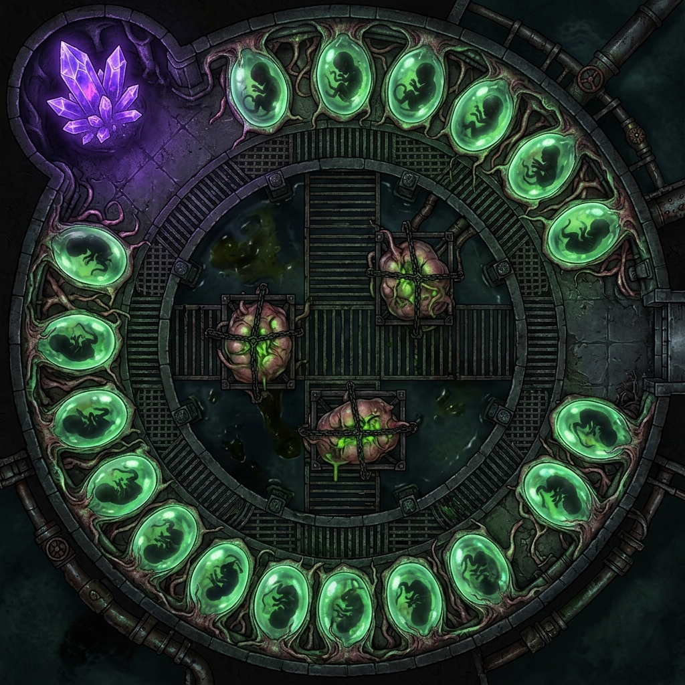

THE BLEEDING NEEDLE
Suture's Signature Abattoir & Acolyte Dossier
D&D 3.5 / Pathfinder 1E Campaign Asset
Prepared for Campaign Release
Blackwater Quay Underworld Chronicles
Suture's Signature Vessel: The Bleeding Needle
Complete TTRPG Vehicle Manual & Abattoir Operations Guide
System Compatibility: D&D 3.5 / Pathfinder 1E
Redesigned Under Suture's Directives (The Anti-Medical Doctrine)
The Bleeding Needle is a colossal mobile laboratory dreadnought sheathed in light-devouring blackwater ironwood and powered by the Tri-Weave (fusing arcane transmutation, psionic resonance, and divine blood-magic). Re-forged under Suture's direct supervision, the vessel is a physical manifestation of Captain Mikhailis (Kael) and Banki’s burning, absolute hatred of the Thessalan Consortium—under whose scalpels the brothers spent decades imprisoned, tortured, and subjected to horrific biomantic experiments. Scorning the sanitized, academic pretense of surface medicine, the dreadnought is a floating Magic Pirate Abattoir designed to tear Consortium remnants apart, weaponize their stolen research, and turn their tools of horror back upon them.
---
1. VESSEL SPECIFICATIONS & SYSTEMS
+-------------------------------------------------------+
| THE BLEEDING NEEDLE |
+-------------------------------------------------------+
| [UPPER DECK] --> Bowsprit Jaw & Boneshard Catapults |
| [MID DECK] --> Specimen Cabin & Holding Pens |
| [LOWER DECK] --> Basalt Altars & Abattoir-Loom |
| [BIOMASS CORE] -> Siphon Vats & Birthing Caul-Sacks |
| [KEEL CORE] --> Leviathan Spine & Heart-Cluster |
+-------------------------------------------------------+
- Vessel Class: Colossal Mobile Abattoir Dreadnought
- Dimensions: 220 ft. long, 60 ft. wide, drawing 24 ft. of water.
- Hull Sheathing: 4-inch blackwater ironwood plating (grants DR 15/adamantine and renders the ship invisible to all divination, scrying, and telepathic detection).
- Propulsion:
1. Fleshgrafted Oar-Limbs: Sixteen massive, webbed claws spliced from kraken-spawn and deep-sea scrags. They emerge from oar-ports in the lower hull, rowed by a shared nervous system.
2. Biomantic Manta-Dermal Sails: Dozens of drowned phantoms are bound into the timber of the sails and rudder, catching invisible planar winds and steering the ship against currents without throwing a wake.
Tactical Battlemaps
Grid Version

No-Grid Version

---
2. DECK-BY-DECK KEY & THEMED ROOM DESCRIPTION
DECK I: THE UPPER DECK (THE ATTACK DECK)
Room I-A: The Bowsprit Jaw (Suture's Gaping Bow)
The bow of the dreadnought terminates not in a wooden figurehead, but in a horrific, kraken-spliced maw of solid ironwood and calcified bone.
- Themed Description: The Gaping Bow is a writhing mass of reanimated muscle tendons and thick black ligaments that hold open a pair of multi-tiered jaws. The teeth are carved from the ribs of deep-sea leviathans, each etched with runes of tearing and holding. When Kael rams a target vessel, the jaws snap shut with a sickening crunch, chewing through wood and steel to pin the prey flush against the ship's throat.
Room I-B: The Telekinetic Catapult Docks
Four heavy platforms are situated along the deck (two bow, two stern), built of reinforced darkwood and bolted with lead plates.
- Themed Description: Replaces standard ballistas. These catapults launch massive, jagged harpoons carved from calcified leviathan bone wound with silver-threaded cabling. The winding mechanism is entirely non-mechanical: bone spindles turned by Suture's Myomeric Bio-Winches wind the cables. The air around the catapults hums with telekinetic force, and the launching sequence is silent, marked only by the sudden flash of purple kinetic recoil.
Room I-C: The Runic Conduit Rails
Brass piping runs along the deck rails, pulsing with glowing green and crimson fluids pumped from the lower decks.
- Themed Description: The rails are carved with rows of defensive runes designed to purge the decks. As a standard action, the pilot can open the valves, venting a boiling, acidic Necrotic Blood-Mist in a 30-ft. cone. The spray smells of vinegar and scorched iron, melting flesh on contact and choking boarding vectors.
Room I-D: The Forecastle Lookouts
A raised platform at the extreme bow of the ship, positioned directly above the Bowsprit Jaw.
- Themed Description: The forecastle is a cold, wind-swept perch enclosed by a railing of curved bones. The floor is sheathed in lead plating to block telepathic noise rising from the lower laboratories, allowing the lookouts to focus entirely on scrying the dark waters ahead with their brass spyglasses.
Room I-E: The Main Capstan & Windlass
Situated amidships, directly behind the foremast.
- Themed Description: This massive capstan is built of solid fey-metal and ironwood. Instead of hemp rope, it is wound with heavy silver cables that run down through iron-lined hawsepipes to the massive, spiked ironwood anchors. It is operated by a central lever that, when pushed, activates a low-tier psionic winch, allowing a single operator to raise the anchors silently.
Room I-F: The Quarterdeck & Ship's Wheel (The Helm)
The raised command deck at the stern of the vessel, overlooking the main deck.
- Themed Description: The helm features a heavy, darkwood wheel mounted on a brass column pulsing with blue light. The column connects directly to the Leviathan Spine in the keel, allowing Captain Kael to telepathically feel the water currents and command the ship's rudder. A curved glass canopy protects the helmsman from wind and spray.
Room I-G: The Rigging and Masts
The three towering masts (Foremast, Mainmast, and Mizzenmast) rising from the deck.
- Themed Description: The masts are carved from single trunks of abyssal ironwood, reinforced with runic iron bands. The sails are woven from black spider-silk by the Vesh acolytes, laced with silver thread that catches invisible planar winds, allowing the ship to sail silently against the tide.
---
DECK II: THE MID DECK (THE STASIS HOLD)
Room II-A: The Specimen Cabin (The Jars of the Vael-Kaelor)
A long, narrow room lined with heavy ironwood shelves fitted with leather straps to secure their contents during rough seas.
- Themed Description: This room serves as Suture's library of biological components. The shelves are packed with hundreds of glowing clay and raw bone jars containing floating aberration eyes, pulsing hearts, and spliced tissues suspended in green preservative brine. Stolen Dhakaani scroll tubes and Consortium blueprints are pinned to the walls with iron scalpels. The air smells of formaldehyde and dried copper.
Room II-B: The Suppressive Holding Pens
A series of 24 heavy iron cages arranged in two rows along the center of the deck.
- Themed Description: The bars of these cages are wound with lead-silver wire mesh and carved with psionic-suppression glyphs. The floor is lined with iron drains to wash away blood. When captives are thrown inside, the glyphs dampen their psionic and magical abilities, leaving them lethargic and unable to cast spells or manifest powers. The cages hum with a low telepathic static that causes minor headaches to anyone nearby.
Room II-C: The Stasis lockers
Sixteen horizontal stone caskets lined along the outer hull.
- Themed Description: These caskets are filled with thick, translucent alchemical preservation gel. The lids are heavy slabs of black basalt etched with runes of preservation. When a subject (or wounded PC) is submerged in the gel and the lid is sealed, their biological clock stops. This halts all progression of poison, disease, or The Void of Madness madness, allowing Suture time to prepare surgeries.
Room II-D: The Officer’s Mess & Galley
Located in the aft section of Deck II, opposite the Specimen Cabin.
- Themed Description: A dark-paneled room with a long oak table and six chairs. A hearth of basalt brick contains a self-heating runic grate where deep-trench fish and refined algae are cooked. Suture, Vespera, and Kael dine here, their conversations quiet and clinical.
Room II-E: Captain Kael's Quarters (The Sovereign’s Anchor)
The captain’s cabin, located at the absolute stern of Deck II.
- Themed Description: The room is decorated with faded velvet tapestries and shelves of old sea-charts. A heavy desk of blackwood is covered in logbooks and scrying glass pieces. The quarters are warded with lead plating to prevent mental intrusions, providing Kael a quiet sanctuary from the ship's telepathic core.
Room II-F: The Crew Quarters (The Vanguard Hammocks)
Located in the fore section of Deck II.
- Themed Description: A large, open space where the 20 Sea-Wolf Hybrids and Chitin-Bound Rigger Hybrids rest. Hammocks made of coarse spider-silk are suspended from the ceiling beams. The room is damp and smells of sea-salt and fur, with small lockers containing personal gear lining the walls.
Room II-G: The Armory & Munitions Hold
A warded room adjacent to the Crew Quarters.
- Themed Description: Racks of reiver blades, boneshard spears, and iron-plated shock gear line the walls. Heavy chests contain cartridges of compliance mist and jars of acidic mutagens, secured by runic locks that only Kael or Suture can open.
---
DECK III: THE LOWER DECK (SUTURE'S SLAUGHTER-FLOOR / THE ABATTOIR)
Room III-A: The Basalt Altars (The Three Tables)
The center of the abattoir contains three massive basalt slabs arranged in a triangle directly beneath the mainmast.
- Themed Description: Scorning the sterile tables of the Consortium, these tables are permanently stained with dried blood and coated in a thin layer of nutrient slime to keep harvested tissues alive. Each table is fitted with Suture-Clamps—living, skeletal claws that physically rise from the stone to grip subjects. The three tables are named:
The Altar of the Lattice:* Used for psionic node extractions.
The Altar of the Thread:* Used for splicing and grafting limbs.
The Altar of the Maw:* Used for raw slaughter and carcass deconstruction.
Room III-B: The Abattoir-Loom Assembly
A terrifying, ceiling-mounted mechanism suspended directly above the Basalt Altars.
- Themed Description: The Loom is a writhing web of spliced chitinous claws, fey-metal needles, and razor-sharp bones. Controlled by Suture’s darkwood limbs via a central phrenic console, the loom moves with manic, terrifying speed, dipping down to cut tissue, inject mutagens, and stitch skin with sub-millimeter precision. The Loom clicks and whirs constantly, sounding like a thousands of skeletal fingers tapping on glass.
Room III-C: The Acolyte Bunks
A cramped, shared cabin at the stern of the deck where the 18 House Acolytes sleep.
- Themed Description: The bunks are stacked three-high, built of rough pine boards. The walls are covered in anatomical sketches, alchemical formulas, and faded noble banners of the Remaining Houses (Vae, Carthen, Vrunn, Maelen, Vesh) pinned to the wood. The air smells of mint, sulfur, and dirty laundry, reflecting the acolytes' frantic, exhausted lifestyle.
Room III-D: The Water Ballast Tanks
Located along the lower bilge line of Deck III.
- Themed Description: Large ironwood tanks fitted with magic-conduit pumps. They pump seawater and heavy, magically refined mercury to adjust the ship's ballast, allowing the dreadnought to submerge or rise silently without venting air bubbles.
Room III-E: The Acidic Bilges
The lowermost drainage area directly beneath Suture's Slaughter-Floor.
- Themed Description: Basalt gutters channel blood, bodily fluids, and wash-water down into these lead-lined bilge pits. The bilges contain a mild alchemical acid to break down organic waste, preventing clogs in the ship's drainage networks.
Room III-F: The Centrifuge & Distillation Station
Located adjacent to the basalt tables in Deck III.
- Themed Description: A row of copper boilers and spinning brass centrifuges operated by the Vrunn duergar acolytes. Here, raw bone marrow, spinal fluid, and blood are filtered, separated, and refined into pure mutagenic essences.
Tactical Room Maps: Suture's Slaughter-Floor / The Abattoir
##### Grid Version

##### No-Grid Version

---
DECK IV: THE BIOMASS CORE (THE INCUBATION BAY)
Room IV-A: The Siphon Stomach-Vats
Three massive, pulsing biological stomach-vats harvested from colossal sea-monsters, suspended in iron frames.
- Themed Description: These organic vats bubble with a dense mixture of hydrochloric enzymes, troll blood, and alchemical catalysts. Suture’s acolytes dump raw organic waste and carcasses into the vats. The enzymes digest the meat down to raw biomass while keeping the nerves of the tissue firing, ensuring the harvested cells remain active and ready for hybridization.
Room IV-B: The Birthing Caul-Sacks
Sixteen floor-to-ceiling organic membranes harvested from giant squids, lining the walls of the core.
- Themed Description: These sacks are translucent, showing the fetal silhouettes of gestating Vanguard constructs (Blink-Hounds, Trench-Fiends) floating in warm amniotic fluids. The membranes pulse rhythmically in sync with the ship's Leviathan Hearts, expanding as the constructs undergo rapid, magically accelerated cellular mitosis.
Room IV-C: The Phrenic Crystal Core
A central chamber containing a massive cluster of raw, violet-glowing sapphire matrices.
- Themed Description: The Phrenic Core stores harvested psionic energy. It is linked directly to Kael's telepathic loop, allowing him to monitor the stability of the gestating constructs and feed mental commands to the ship's crew. The air in this room is thick with ozone, and loose items float slightly due to minor gravity distortions.
Room IV-D: The Gestation Fluid Reservoirs
A row of massive, flexible bladder-tanks lining the lower bilge of Deck IV.
- Themed Description: These reservoirs are harvested from the swim-bladders of deep-sea trench beasts. They hold thousands of gallons of warm amniotic fluid and nutrient-rich transmutational blood-serum, pumped into the Birthing Caul-Sacks during incubation cycles via pulsing vein-lines.
Room IV-E: The Stasis Casket Maintenance Lockers
A narrow storage locker at the aft section of Deck IV.
- Themed Description: Racks of spare runic basalt plates, copper wiring coils, and jars of thick lavender stasis gel. The Vae acolytes use this room to store tools needed to calibrate the chronal summoners and repair stone caskets.
Tactical Room Maps: The Biomass Core & Incubation Bays
##### Grid Version

##### No-Grid Version

---
THE KEEL: THE LEVIATHAN SPINE & HEART-CHAMBER
The Leviathan Spine
The central keel of the ship, visible as a massive spinal column running along the floor of the lower decks.
- Themed Description: The keel is constructed from the fossilized vertebrae of an ancient deep-sea leviathan. The bone has been reanimated with pulsing necrotic veins, allowing the ship to feel water currents and telepathically report structural status to the bridge.
The Heart-Cluster (The Heart-Chamber)
A dark, humid room situated at the absolute center of the keel.
- Themed Description: Replaces standard engines. Suspended in a cage of blackwater ironwood is a massive, pulsing cardiovascular cluster of three fused Leviathan Hearts. Suture feeds this cluster with distilled blood-serum and mutagens. The heart beats rhythmically, pumping thick necrotic blood through a highway of arteries lining the ship's frames to feed the oar-limbs and stabilize the vessel.
---
3. THEMED CREW ROSTER & SPECIFIC PROFILES
A. The Command Triad
1. Suture (Commander — Void-Touched Fleshwarper):
* Visual: Suture is a thin, skeletal human who wears a tight lead-plated blindfold to block out physical light, relying entirely on his mindsight. Grafted to his torso are four mechanical/biomantic darkwood limbs tipped with silver scalpels and needles. His skin is stained yellow by acid, and he wears an apron of boiled sharkskin.
* Role: Kael's crazed apprentice who scorns the regulated titles of surface medicine. He coordinates all laboratory work, surgical enhancements, and shipboard integrations.
2. Stitch (Lab Warden — Flesh Golem Prototype):
* Visual: A towering, 9-foot-tall construct stitched from the muscles of aquatic scrags and duergar mercenaries. His skin is a patchwork of blue-green scales and pale flesh, bolted with iron brackets.
* Role: Guard of the Biomass Core. Stitch stands motionless at the entrance of Deck IV, enforcing absolute compliance. He is immune to magic and slams intruders with his massive fists.
3. Vespera Thran (Chief Apothecary):
* Visual: A human cleric of the Veil, thin to the point of being skeletal, smelling of grave-earth and lye. She wears black wool robes and carries a silver censer.
* Role: Suture's primary assistant, managing mutagen synthesis and specimen stabilization. She is emotionally detached and prioritizes the laboratory's output over individual survival.
B. The Lab Staff
- 18x House Acolytes (Suture's Surgical Assistants): Rather than lobotomized thralls, these are the youth of the Remaining Houses of Blackwater Quay, drafted into the abattoir under the Flesh Debt clause of the Shadow-Vassal Decree signed by the nobility.
Because the noble houses of the Quay turned a blind eye to—or directly profited from—the Thessalan Consortium’s decade-spanning kidnapping and experimentation ring that imprisoned Kael and Banki, the brothers view these children as living reparations. Ostensibly held as collateral hostages to guarantee their families' compliance, they have been apprenticed to Suture to learn the raw, anti-ethical biomancy born of their families' complicity. Over time, as Kael's fleet makes their houses incredibly wealthy through laundered plunder, these youths are outgrowing their hostage status, aligning fully with the crew's crusade to watch the Consortium's survivors shatter.
(See full dossiers in the Acolyte Roster file for names and character sheets).
- 40x Biomantic Manta-Dermal Sails (Steering/Sails): The living membranes harvested from abyssal manta-drakes, fused into the sails, rudder, and timbers. They perform all ship rigging tasks automatically.
C. The Deck Force & Sentinels
- 20x Sea-Wolf Hybrids (CR 5): Spliced aquatic sentinels who patrol the upper decks and locks. They climb the rigging, steer the ship under Kael's command, and serve as boarding guards. (Tripping bites, Swim speed 40 ft., aqueous camouflage).
D. The Vanguard Security (Stasis Holds)
Stored in the Deck II stasis caskets and Deck IV birthing sacks, these biological shock-troopers are ready to be deployed via the deck slide-tubes during combat:
- 4x Blink-Hound Shock-Troopers (CR 6): Spliced combat beasts with displacer hide grafts, capable of shifting out of phase to intercept boarders.
- 4x Trench-Fiend Guardians (CR 7): Massive, regeneration-grafted aquatic scrags armed with rusted iron harpoons, deployed directly into the water to defend the hull from undersea attacks.
---
4. TTRPG STATISTICS (D&D 3.5 / PATHFINDER 1E)
The Bleeding Needle
- Colossal Vehicle: Space 220 ft. by 60 ft.; Height 40 ft. (plus mast).
- Seaworthiness: +12; Ship Handling: +6 (piloted by Kael's hybrid crew).
- Speed: Swim 40 ft. (flesh-rowed/spirit-driven); Overall AC: 22 (-8 size, +20 natural/ironwood sheathing).
- Hardness: 15; HP: 900 (break threshold 300).
- Rigging HP: 160 (masts and sails).
- Ram: 12d6 bludgeoning/piercing damage (ignores up to 10 points of target hardness due to the Gaping Bow).
---
Mage-Tech Weaponry & Hazards
Barbed Boneshard Harpoon (Bow & Stern)
- Attacks: +8 ranged (within 100 ft.).
- Damage: 3d8 ballista damage plus automatic grapple check.
- Grapple Effect: On a successful grapple, the target vessel's speed is halved. The bone spindles can drag the target 20 ft. closer at the start of each of the Needle's turns.
Alchemical Blood Vent (Hazard)
- Action: Standard action (activated from the bridge).
- Effect: A 30-ft. cone of boiling, acidic blood and compliance mist erupts from the runic conduits. All creatures in the area take 4d6 fire/acid damage and must succeed on a DC 16 Fortitude save or be sickened for 1d4 rounds by the chemical vapors.
---
5. EXPEDITION LAUNCHPAD OPERATIONS (PC SERVICES)
When the player characters utilize the Bleeding Needle as their expedition launchpad and mobile sanctuary, they gain access to the following specialized services, systems, and rest protections:
A. The Runic Shroud (Safe Haven Rest Rules)
- Intrusion Immunity: The dreadnought's sheathing of blackwater ironwood and lead-silver warded chambers completely shield the interior from the Elder Node's telepathic reach. While resting aboard the Bleeding Needle, PCs are completely immune to the daily sanity checks, mental fatigue, or psychic sweeps of the Campaign's daily intrusion tables.
- Stasis Recovery: A PC placed in one of Suture's stasis caskets enters a suspended animation state. This halts all progression of poison, disease, The Void of Madness madness, or biological corruption, allowing the crew time to prepare remedies or grafts.
B. Suture's Biomantic Grafting Clinic
- Harvesting Materials: PCs can harvest raw materials (tissue samples, glands, claws) from defeated Underdark monsters and bring them to Suture's abattoir.
- Graft Application: Suture will perform any of the biomantic grafts listed in the player options. Due to Suture's mastery and the assistance of the 18 House Acolytes, all Heal checks made during these operations receive a +5 masterwork bonus, and the required surgical recovery times are reduced by 50%.
C. Alchemical Essence Refining (Resource Conversion)
The PCs can turn over captured enemies or monster carcasses to Suture and his acolytes, who process them into refined magical assets:
- Arcane Ink: Siphoned from arcane spellcasters. (Can be used to write scrolls or add spells to a wizard's spellbook at 75% of the standard gold cost).
- Psionic Node Crystals: Extracted from psionicists. (Can be dissolved to restore 1d4+1 power points or recharge psionic items).
- Divine Gold Serum: Refined from divine spellcasters. (Can be consumed as a standard action to restore a single expended divine spell slot of up to 4th level).
D. Benthic Navigation & Bridge Controls
- Telepathic Bridge: The helm is connected to the reanimated Leviathan Spine. A pilot telepathically linked to the ship gains a +4 bonus on Knowledge (dungeoneering) and Psicraft checks to navigate deep-sea trenches, detect volcanic thermal vents, or avoid gravity anomalies.
- Acolyte Crew Support: The 18 House Acolytes handle all routine ship management and weapon operations during encounters. The PCs do not need to spend actions firing the Boneshard Harpoons or steering, allowing them to focus entirely on combat, spellcasting, or boarding strategies.
Inventory & Arsenal: The Bleeding Needle
Complete Catalog of Surgical Implements, Weaponry, and Secrets
System Compatibility: D&D 3.5 / Pathfinder 1E
This document contains a comprehensive, highly detailed inventory of the items, weapons, alchemical substances, and hidden secrets stored aboard Suture's signature dreadnought, The Bleeding Needle.
---
1. SURGICAL APPARATUSES & IMPLEMENTS (SUTURE'S TOOLS)
The Needle-Weave Scalpel
- Description: An alchemical silver scalpel with a hollow handle containing tiny capillary tubes. It is connected to a small bulb filled with transmutational acid.
- TTRPG Mechanics: +1 masterwork bonus to Heal checks made during graft operations. In combat, it functions as a masterwork silver dagger that deals an additional 1d4 acid damage.
The Phrenic Nerve-Tweezers
- Description: A pair of delicate tweezers forged from cold-iron and tipped with tiny, psionically resonant sapphire tips.
- TTRPG Mechanics: Grants the user a +4 bonus on Heal checks specifically made to graft sensory or nervous-system organs (such as eyes or brain tissue). Allows the user to manipulate microscopic nerve fibers without triggering physical pain or tissue rejection.
The Divine Marrow-Siphon
- Description: A heavy copper pump equipped with a hollow bone needle, warded with desecration runes.
- TTRPG Mechanics: Used to siphon the marrow from captured divine spellcasters (clerics, paladins). Siphoning takes 10 minutes and deals 2d6 Constitution damage to the subject, refining the marrow into one vial of Divine Gold Serum.
Chitinous Bone-Drills
- Description: Organic drills powered by minor earth-elementals bound inside lead cylinders. The drill bits are carved from the shells of subterranean ankhegs.
- TTRPG Mechanics: Can drill through bone or iron plating (hardness 10) in 3 rounds. In combat, it functions as a natural weapon attack dealing 2d6 piercing damage (ignores up to 5 points of hardness).
Eldritch Flesh-Glue (6 jars)
- Description: A sticky, glowing gelatinous slime made from boiled troll hide and refined violet-essence.
- TTRPG Mechanics: Applying a jar of flesh-glue to a wound functions as a Cure Moderate Wounds spell (2d8+3 healing) but leaves a thick, green scar. Reduces graft recovery times by 24 hours per application.
---
2. MAGE-TECH WEAPONRY & SHIP DEFENSES
Barbed Boneshard Harpoons
- Description: Massive harpoons carved from the ribs of deep-sea leviathans, fitted with backward-facing barbs. They are wound with silver-threaded cables.
- TTRPG Mechanics: See Vehicle Combat stats. harpooned vessels are pinned and dragged closer by the telekinetic bone windlasses.
Necrotic Blood-Mist Vents
- Description: Brass conduit rails lining the ship's deck rails, connected to the lower acid bilges.
- TTRPG Mechanics: Erupts a 30-ft. cone of acidic blood-mist as a standard action. All targets in the cone take 4d6 fire/acid damage and must make a DC 16 Fortitude save or be sickened for 1d4 rounds by the toxic fumes.
Reiver Cutlasses (20 units)
- Description: Cold-iron cutlasses used by the Sea-Wolf deckhands. The blades are etched with poison-retention grooves and wrapped in sharkskin grips.
- TTRPG Mechanics: +1 masterwork cold-iron cutlasses. The grooves allow any applied injury poison to remain active for three successful hits instead of one.
---
3. ALCHEMICAL SUBSTANCES & MUTAGENS (THE STORES)
Blue-Drop Mutagen (6 flasks)
- Description: A glowing blue mutagen synthesized from deep-sea trench flora and Blue-Drop compliance spores.
- TTRPG Mechanics: Consuming a flask grants the user a Swim speed of 40 ft. and darkvision (60 ft.) for 1 hour. However, the user must make a DC 14 Fortitude save or take 2 points of Charisma damage as their skin dries out and breaks into purple scales.
Thessalan Essence Catalyst (3 flasks)
- Description: Stolen Consortium reagent used to stabilize hybridization grafts.
- TTRPG Mechanics: Adding a flask of catalyst to Suture's Birthing Caul-Sacks increases the success rate of complex Vanguard grafting by 20%.
Divine Gold Serum (4 vials)
- Description: A thick, golden fluid refined from the marrow of divine spellcasters.
- TTRPG Mechanics: Consumed as a standard action to restore a single expended divine spell slot of up to 4th level.
Arcane Ink (12 pots)
- Description: A dense black ink that smells of copper, refined from captured wizards.
- TTRPG Mechanics: Used to write scrolls or add transmutational/necromantic spells to a wizard's spellbook at 75% of the standard gold cost.
---
4. HIDDEN & SECRET ITEMS (SHIP SECURITY)
The Vell-Kin Reliquary (Hidden Item)
- Description: A small box carved from the skull of a drow patriarch, containing a glowing bone key that opens the ancestral vault of the fallen House Vell.
- Where Hidden: Concealed inside a secret compartment beneath the main basalt table (The Altar of the Lattice) in Deck III.
- How Hidden:
1. Lead Sheathing: The compartment is lined with lead sheets, rendering the reliquary invisible to all Detect Magic, Detect Psionics, or Locate Object spells.
2. Skeletal Lock: Opening the compartment requires a character to rotate three of the table's skeletal Suture-Clamps in a specific sequence (Left claw down, Right claw twisted counter-clockwise, Center claw open).
3. Mechanics to Find: Spotting the secret seam requires a DC 25 Search check. Bypassing the skeletal lock without the sequence requires a DC 25 Disable Device check.
The Saffron Manifests (Hidden Item)
- Description: A leather-bound ledger detailing the names, prices, and noble houses involved in the Quay's child-trafficking lanes that supplied the Thessalan Consortium.
- Where Hidden: Tucked behind a secret wood panel in Captain Kael's cabin (The Sovereign’s Anchor) on Deck II.
- How Hidden:
1. Nondetection Glyph: The panel is warded with a permanent Nondetection glyph (caster level 12th).
2. Needle Trap: Attempting to pry open the panel without pressing Kael's hidden desk drawer lever triggers a spring-loaded bone needle coated in Blue-Drop poison.
3. Mechanics to Find: Finding the panel requires a DC 23 Search check. Bypassing the trap requires a DC 22 Disable Device check. The needle deals 1 point of piercing damage plus Fortitude DC 14 (or suffer the Blue-Drop Mutagen scales effect).
The Planar Anchor Core (Hidden Item)
- Description: A heavy, brass-bound iron sphere humming with planar energy, allowing the ship to perform its daily Planar Glide teleport.
- Where Hidden: Anchored in the bilge beneath the triple Leviathan Heart-cluster.
- How Hidden:
1. Disguised Hatch: Hidden behind a heavy iron panel disguised as structural hull framing.
2. Phrenic Shock Ward: The hatch is protected by a ward that telepathically attacks anyone who touches it without first projecting the Vael-Kaelor mental cipher.
3. Mechanics to Find: Spotting the disguised hatch requires a DC 28 Search check. The Phrenic Shock ward deals 6d6 mental damage (DC 18 Will save for half) to anyone who touches the hatch without authorization.
The Thessalan Grafting Manual (The Unethical Syllabus)
- Description: A massive, skin-bound tome detailing the Consortium's most horrific grafting techniques, including the creation of Sea-Wolves.
- Where Hidden: Kept in a secret drawer beneath the cataloging desk in the Specimen Cabin on Deck II.
- How Hidden:
1. Explosive Runes: The cover of the tome is warded with Explosive Runes.
2. Secret Page: The manual is disguised as a boring ledger of bilge pump repairs using a Secret Page spell (Will DC 20 to pierce).
3. Mechanics to Find: Finding the drawer requires a DC 22 Search check. Bypassing the Explosive Runes requires a DC 26 Spellcraft check.
Dossier: Suture's Surgical Assistants
The 18 House Acolytes of The Bleeding Needle
System Compatibility: D&D 3.5 / Pathfinder 1E
This document contains detailed NPC character sheets and roleplaying profiles for the 18 noble youth drafted from the Remaining Houses of Blackwater Quay, currently serving aboard The Bleeding Needle.
Because the noble houses of Blackwater Quay directly profited from or ignored the Thessalan Consortium's decade-spanning kidnapping and experimentation rings—which held Kael and Banki in cages for decades—the brothers have demanded these firstborn heirs as living reparations (the "Flesh Debt" clause of the Shadow-Vassal Decree). In Suture's abattoir, these former aristocrats are forced to confront the visceral reality of the biomancy that bought their houses' comfort, and they are growing into Kael's most fanatical supporters.
---
====================================================================
HOUSE VAE DOSSIERS
====================================================================
1. Kaelen Vae (Lead Navigator)
- Age: 19 | Race: Fey-Drow | Class/Level: Wizard (Diviner) 4 / Loremaster 1
- Physical: Tall, with silver hair kept in a tight braid, wearing grease-stained velvet robes and carrying a bronze astrolabe.
- Hopes: To see House Vae restored to its ancestral seat in the Silver Lattice, free from both surface taxes and subterranean fear.
- Interests: Subterranean cartography, planar astrology, and playing the fey lute.
- Desires: Secretly desires to master Kael's timeline-stepping technique to undo the night the Consortium fell.
- TTRPG Key Stats: Str 8, Dex 14, Con 10, Int 18, Wis 14, Cha 12. Key Skills: Knowledge (dungeoneering) +14, Psicraft +12. Signature Spell: Detect Scrying.
2. Lydia Vae (Temporal Analyst)
- Age: 18 | Race: Fey-Drow | Class/Level: Wizard (Transmuter) 5
- Physical: Pale, with ink-stained fingers and constant dark circles under her amber eyes. She carries three brass sandglasses on her belt.
- Hopes: To mathematically stabilize the temporal fields of the Black Labs so that no researcher ever ages prematurely.
- Interests: Chronic-flux mathematics, cataloging time anomalies, and collecting rare hourglasses.
- Desires: Wants to earn Suture's respect and prove that alchemy is subservient to temporal geometry.
- TTRPG Key Stats: Str 8, Dex 15, Con 11, Int 19, Wis 12, Cha 10. Key Skills: Knowledge (arcana) +13, Spellcraft +13. Signature Spell: Haste.
3. Valerius Vae (Core Custodian)
- Age: 17 | Race: Fey-Drow | Class/Level: Psion (Shaper) 5
- Physical: Aristocratic, with sharp features and a high collar. He wears lead-lined silk gloves to handle the phrenic crystal matrices.
- Hopes: To use his position to funnel psionic crystals back to his family's private vaults.
- Interests: Crystal cutting, psionic resonance theory, and collecting rare wines.
- Desires: Seeks to construct a personal psionic shield that will block Kael's Mindsight detection.
- TTRPG Key Stats: Str 9, Dex 14, Con 12, Int 17, Wis 13, Cha 11. Key Skills: Psicraft +12, Concentration +10. Signature Power: Ectoplasmic Cocoon.
4. Myrella Vae (Incubation Assistant)
- Age: 16 | Race: Fey-Drow | Class/Level: Druid (Aquatic Archetype) 5
- Physical: Quiet, with wide, glassy blue eyes. She wears an apron of boiled sharkskin and has small webbed gill-slits on her neck.
- Hopes: To breed a Vanguard construct that can survive in the deepest toxic sulfur pools of the trench.
- Interests: Marine biology, deep-sea botany, and whispering to the squid in the birthing sacks.
- Desires: Desires to escape the dry-docks and live permanently in the lightless trench, away from noble politics.
- TTRPG Key Stats: Str 10, Dex 13, Con 14, Int 14, Wis 16, Cha 11. Key Skills: Handle Animal +11, Knowledge (nature) +12. Signature Spell: Summon Nature's Ally III (aquatic only).
5. Zarek Vae (Ledger Keeper)
- Age: 18 | Race: Fey-Drow | Class/Level: Rogue 3 / Archivist 2
- Physical: Short, wearing a leather harness loaded with scroll tubes and a silver quill tucked behind his pointed ear.
- Hopes: To compile the perfect anatomical archive that will allow House Vae to replicate Suture's grafts.
- Interests: Cryptography, anatomical sketching, and collecting forbidden texts.
- Desires: Desires to discover a blackmail hook on Sable to secure his family's release from the Shadow-Vassal Decree.
- TTRPG Key Stats: Str 10, Dex 16, Con 12, Int 16, Wis 12, Cha 10. Key Skills: Decipher Script +13, Forgery +11. Signature Ability: Dark Knowledge (Tactics).
6. Tessa Vae (Phrenic Linker)
- Age: 15 | Race: Fey-Drow | Class/Level: Wilder 5
- Physical: Small and frail, with stark white hair and a silver circlet warded with lead plates to quiet her telepathic channels.
- Hopes: To silence the constant mental noise of the Quay and find peace in Kael's quiet mental loops.
- Interests: Mind-linking, sensory telepathy, and sketching the shapes of thoughts.
- Desires: Wants to become Kael’s personal telepathic proxy, finding safety in his overwhelming shadow.
- TTRPG Key Stats: Str 7, Dex 14, Con 10, Int 12, Wis 15, Cha 18. Key Skills: Autohypnosis +10, Sense Motive +10. Signature Power: Mindlink.
---
====================================================================
HOUSE CARTHEN DOSSIERS
====================================================================
7. Orin Carthen (Specimen Registrar)
Age: 20 | Race: Human (Void-Touched) | Class/Level: Expert 5
Physical: Methodical, with an empty socket where his left eye was (now covered by a leather patch). He wears a heavy linen apron.
Hopes: To pay off House Carthen's debt ahead of schedule and regain their surface custom-house permits.
Interests: Taxonomy, preservation fluid alchemy, and labeling.
Desires: Desires to catalog a completely new species of deep-sea aberration and name it after himself.
TTRPG Key Stats: Str 12, Dex 10, Con 14, Int 16, Wis 14, Cha 8. Key Skills: Profession (apothecary) +12, Knowledge (local) +11. Signature Feat: Diligent.
8. Sylvia Carthen (Extract Tester)
Age: 17 | Race: Human | Class/Level: Alchemist (Vivisectionist) 5
Physical: Energetic, with wild red hair tied back and acid-scarred sleeves. She carries a row of glass test tubes in her leather vest.
Hopes: To isolate the exact chemical stabilizer that makes the Thessalan Essence Flask non-toxic.
Interests: Toxin extraction, distillation, and tasting non-lethal mutagens.
Desires: Wants to compile a book of "unethical recipes" and open her own independent street-clinic in the Quay.
TTRPG Key Stats: Str 10, Dex 16, Con 13, Int 18, Wis 11, Cha 9. Key Skills: Craft (alchemy) +14, Heal +10. Signature Attack: Sneak Attack +3d6.
9. Corin Carthen (Sanitation Warden)
Age: 19 | Race: Human | Class/Level: Paladin of Tyranny 5
Physical: Stoic and grim, clad in lead-lined plate armor and carrying a massive bone shovel and a silver-plated brush.
Hopes: To enforce absolute order in the lower decks and keep Suture's biological waste from contaminating Kael's private cabin.
Interests: Runic containment, scrubbing techniques, and polishing armor.
Desires: Wants to prove to Banki that order can be maintained even inside Suture's biological nightmare.
TTRPG Key Stats: Str 15, Dex 10, Con 14, Int 10, Wis 12, Cha 14. Key Skills: Intimidate +10, Heal +8. Signature Ability: Aura of Despair.
10. Maeve Carthen (Resonance Harvester)
Age: 18 | Race: Human (Void-Touched) | Class/Level: Bard (Dirgesinger) 5
Physical: Eerie, with silver nails and a soft, rhythmic voice. She carries a music box containing lockets of the fallen Carthen nobles.
Hopes: To weave the memories of the dead Carthen nobility into protective wards for the ship's keel.
Interests: Memory harvesting, ghost stories, and mourning songs.
Desires: Wants to summon the spirit of her grandfather to find where he hid the family's secret ledger.
TTRPG Key Stats: Str 9, Dex 13, Con 12, Int 14, Wis 12, Cha 17. Key Skills: Perform (singing) +12, Knowledge (history) +10. Signature Ability: Song of Sorrow.
---
====================================================================
HOUSE VRUNN DOSSIERS
====================================================================
11. Thrain Vrunn (Vat Engineer)
Age: 22 (Young for a Duergar) | Race: Duergar | Class/Level: Fighter 3 / Master Specialist (Acid) 2
Physical: Stout, with a shaved head and soot-stained skin, wearing heavy iron-plated boots and carrying an iron spanner.
Hopes: To refine the acid-resistance of the Vanguard Brine-Plate so his family's forge can secure Kael's armor contracts.
Interests: Metallurgy, deep-well mining, and drinking heavy stone-beer.
Desires: Desires to rebuild the dreadnought's oar-ports using weightless duergar-steel.
TTRPG Key Stats: Str 16, Dex 12, Con 16, Int 12, Wis 11, Cha 6. Key Skills: Craft (armorsmithing) +12, Search +8. Signature Feat: Exotic Shield Proficiency.
12. Garrick Vrunn (Catapult Master)
Age: 21 | Race: Duergar | Class/Level: Ranger (Combat Engineer) 5
Physical: Broad-shouldered, with thick forearms and grease-stained leather straps. He has a prosthetic iron claw in place of his left hand.
Hopes: To see the Boneshard Catapults fire with enough force to shatter Covenant submersibles at 600 feet.
Interests: Ballistics, rope-weaving, and test-firing catapults in the grotto.
Desires: Wants to capture a Covenant ship intact and dismantle its hull for parts.
TTRPG Key Stats: Str 17, Dex 14, Con 14, Int 11, Wis 12, Cha 6. Key Skills: Profession (siege engineer) +11, Use Rope +10. Signature Attack: Favored Enemy (Humanoids - Holy).
13. Helga Vrunn (Slag Purifier)
Age: 19 | Race: Duergar | Class/Level: Cleric (Earth Domain) 5
Physical: Stocky, with dirt-caked face and a thick leather apron, carrying a stone mortar and pestle.
Hopes: To refine the waste slag of the vats into high-purity earth-runes that can stabilize the Leviathan Spine.
Interests: Mineralogy, runic etching, and stone-carving.
Desires: Secretly wants to graft a stone-skin matrix onto her own arms to become immune to Suture's acid.
TTRPG Key Stats: Str 14, Dex 10, Con 16, Int 12, Wis 16, Cha 8. Key Skills: Craft (stonemasonry) +11, Knowledge (religion) +9. Signature Spell: Stone Shape.
---
====================================================================
HOUSE MAELEN DOSSIERS
====================================================================
14. Joren Maelen (Loom Operator)
Age: 18 | Race: Drow | Class/Level: Rogue 3 / Fleshwarper 2
Physical: Slender, with a green void-glass optical lens grafted directly into his left eye socket, connected to his fingers by fine silver wires.
Hopes: To master the Abattoir-Loom to perform clean, automated grafts that never fail.
Interests: Biological tailoring, nerve-weaving, and precision clockwork.
Desires: Desires to replace his own spine with a flexible, calcified snake-graft.
TTRPG Key Stats: Str 10, Dex 17, Con 11, Int 18, Wis 12, Cha 8. Key Skills: Heal +13, Use Magic Device +11. Signature Ability: Graft Reserve.
15. Kira Maelen (Micro-Stitcher)
Age: 17 | Race: Drow | Class/Level: Wizard (Conjurer) 5
Physical: Tattoos of silver thread trace her arms, ending in delicate, elongated fingers sheathed in silver surgical rings.
Hopes: To stitch fey wings onto the Sea-Wolves to create a flying vanguard.
Interests: Necro-synthesis, dissecting fey wings, and drawing biological diagrams.
Desires: Wants to steal Suture's personal scalpel and learn his secret method for extracting Divine Seeds.
TTRPG Key Stats: Str 8, Dex 16, Con 12, Int 17, Wis 13, Cha 10. Key Skills: Heal +11, Craft (weaving) +11. Signature Spell: Glitterdust.
16. Boran Maelen (Ocular Warden)
Age: 19 | Race: Drow | Class/Level: Sorcerer (Divination-blooded) 5
Physical: Wears a black silk hood that covers his eyes; he "sees" through a floating Ocular Casket linked to his mind.
Hopes: To map the entire Underdark trench system using the ship's divination sensors.
Interests: Scrying, optic-array alignments, and mapping ley-lines.
Desires: Desires to peek into the mind of the Elder Node and survive the contact.
TTRPG Key Stats: Str 9, Dex 14, Con 12, Int 13, Wis 14, Cha 17. Key Skills: Spellcraft +11, Concentration +10. Signature Spell: Clairaudience/Clairvoyance.
---
====================================================================
HOUSE VESH DOSSIERS
====================================================================
17. Elyse Vesh (Sail Weaver)
Age: 20 | Race: Fey-Drow | Class/Level: Bard (Weaver Archetype) 5
Physical: Tall and elegant, wearing a blood-splattered silk dress and carrying a massive bone shuttle wound with silver spider-silk.
Hopes: To weave the sails of Kael's entire armada, making them immune to wind-shear and magical fire.
Interests: Silk-spinning, runic embroidery, and planar wind patterns.
Desires: Desires to sail the Bleeding Needle out of the Underdark and into the planar winds of Astrazalian.
TTRPG Key Stats: Str 10, Dex 15, Con 12, Int 14, Wis 11, Cha 18. Key Skills: Perform (weaving) +13, Use Magic Device +12. Signature Spell: Gust of Wind.
18. Dorian Vesh (Skin Stitcher)
Age: 19 | Race: Fey-Drow | Class/Level: Rogue 3 / Ranger 2
Physical: Athletic, with a silver needles case on his chest and a pair of curved bone-handling shears on his thigh.
Hopes: To synthesize a skin-graft that allows the Sea-Wolves to turn completely invisible to normal eyesight.
Interests: Taxidermy, camouflage patterns, and dissecting deep-sea crabs.
Desires: Wants to replace Dorian's own skin with displacer beast hide to gain permanent displacement.
TTRPG Key Stats: Str 13, Dex 17, Con 12, Int 13, Wis 14, Cha 9. Key Skills: Stealth +13, Craft (leatherworking) +11. Signature Attack: Sneak Attack +2d6.